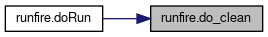
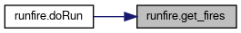
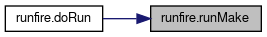

Functions | |
| def | runMake () |
| Run make for project. More... | |
| def | get_fires (settings) |
| Get a list of fires based on Settings. More... | |
| def | do_clean (settings, out_dir) |
| Clean up flag files in given directory that may have been left from failed runs. More... | |
| def | doRun () |
| Run FireSTARR projections for all matching fires based on Settings. More... | |
Detailed Description
Runs FireGUARD for any fires matching the criteria
Function Documentation
◆ do_clean()
| def runfire.do_clean | ( | settings, | |
| out_dir | |||
| ) |
Clean up flag files in given directory that may have been left from failed runs.
- Parameters
-
out_dir Directory to clean
- Returns
- None
Definition at line 75 of file runfire.py.
Here is the caller graph for this function:

◆ doRun()
| def runfire.doRun | ( | ) |
Run FireSTARR projections for all matching fires based on Settings.
- Returns
- None
Definition at line 121 of file runfire.py.
Here is the call graph for this function:
◆ get_fires()
| def runfire.get_fires | ( | settings | ) |
Get a list of fires based on Settings.
- Parameters
-
settings Settings to use for getting fires
- Returns
- dataframe with information about fires
Definition at line 39 of file runfire.py.
Here is the caller graph for this function:

◆ runMake()
| def runfire.runMake | ( | ) |
Run make for project.
- Returns
- results of finished process
Definition at line 30 of file runfire.py.
Here is the caller graph for this function:
